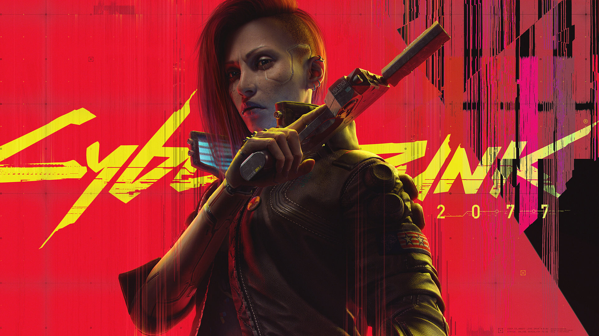

Cyberpunk 2077 è un videogioco noto per friggere schede video per qualsiasi budget
grazie al RTX overdrive e al Path tracyin'
Anche chiamato CyberBUG 2077, è un videogioco sparatutto in prima persona di
genere action RPG e open world, sviluppato da CD Projekt RED e pubblicato da
CD Projekt il 10 dicembre 2020 inizialmente per Xbox One, Microsoft Windows,
PlayStation 4 e Google Stadia, facendo fondere diveri circuiti di renderizzazione
su codeste piattaforme
Nonostante l'aggiornamento 2.0 che prometteva qualcosa di più, il gioco possiede
una IA dei nemici che invidia le creature unicellulari e una fisica che è qualcosa
di mistico.
Night City è una megalopoli americana controllata da corporazioni. Vede il conflitto tra le dilaganti guerre tra bande contendendosi il dominio. La città fa affidamento alla robotica per aspetti quotidiani come la raccolta dei rifiuti, la manutenzione e il trasporto pubblico. I senzatetto abbondano, ma non gli viene preclusa la modifica cibernetica, dando luogo a dipendenza cosmetica e conseguente estrema violenza. Queste minacce vengono affrontate dalle forze armate note come Max Tac. Viene invece impiegato il Trauma Team per i servizi medici rapidi. A causa delle costanti minacce e la criminalità dilagante, tutti i cittadini possono equipaggiare armi da fuoco in pubblico.
Storia
Il gioco inizia con la selezione di uno dei tre percorsi di vita per il personaggio V controllato dal giocatore: Nomade, vita da strada o Corporativo. Tutti e tre i percorsi coinvolgono V che inizia una nuova vita a Night City con il delinquente locale Jackie Welles (Jason Hightower) ed il netrunner, T-Bug.
Nel 2077, il fixer locale Dexter DeShawn (Michael-Leon Wooley) assume V e Welles per rubare un biochip noto come "il relic" dalla Arasaka Corporation. Dopo esserne entrati in possesso, il piano va storto quando assistono all'omicidio del leader della megacorp Saburo Arasaka (Masane Tsukayama) per mano del figlio traditore Yorinobu (Hideo Kimura). Yorinobu insabbia l'omicidio come un avvelenamento ed avvia un intervento della sicurezza dove T-Bug verrà uccisa dai netrunner dell'Arasaka. V e Welles fuggono, ma Jackie viene ferito a morte e la custodia protettiva del Chip viene danneggiata, costringendo V a inserire il biochip nel cyberware della sua testa.
DeShawn, furioso per l'attenzione indesiderata della polizia, spara a V in testa e lo lascia in una discarica, sicuro dell'omicidio. Ma al suo risveglio, V è perseguitato dal fantasma digitale del veterano di guerra diventato un'iconica rock star: Johnny Silverhand (Keanu Reeves), morto nel 2023 durante un tentativo di attacco termonucleare alla Torre Arasaka. V apprende dal suo bisturi, Viktor Vector (Michael Gregory), che il proiettile di DeShawn ha innescato il relic, facendo riaffiorare la personalità di Silverhand. In poche settimane, i ricordi di Johnny sovrascriveranno irreversibilmente quelli di V, prendendo definitivamente il controllo del suo corpo. Il biochip non può essere rimosso, quindi V deve cercare un modo per estrarre il relic senza morire.
Rivivendo i ricordi di Silverhand, V apprende che nel 2013, l'allora fidanzata di Johnny, Alt Cunningham (Alix Wilton Regan) aveva creato il Soulkiller, un'intelligenza artificiale in grado di copiare le menti dei netrunner attraverso i loro collegamenti neurali. Tuttavia, il processo distrugge il cervello del bersaglio. L'Arasaka rapì Cunningham e la costrinse a creare la propria versione del Soulkiller, che avrebbe immagazzinato le menti dei suoi bersagli in una fortezza digitale della mega-corporazione chiamata Mikoshi. Silverhand condusse una missione di salvataggio per recuperare Cunningham ma al suo arrivo l'Arasaka aveva già utilizzato il Soulkiller. Johnny cercò vendetta, ma l'Arasaka lo catturò e usò il Soulkiller anche su di lui.
Nel 2077, l'Arasaka stava pubblicizzando un programma: "Secure Your Soul" e conducendo ricerche segrete sulla scrittura di una copia digitale di una mente in un cervello umano vivente, da cui è nato il Relic. Alla fine, V dovrà decidere se sferrare un attacco alla Torre Arasaka, per ottenere l'accesso fisico al Mikoshi e usare il Soulkiller per rimuovere Silverhand dal suo corpo.
A seconda delle azioni del giocatore durante la partita, V potrà scegliere tra diverse opzioni per condurre l'attacco. Potrà decidere di suicidarsi, consentire a Silverhand di organizzare l'attacco con il suo ex equipaggio, organizzare l'attacco con una rete di alleati riuniti durante la partita o organizzare l'attacco da solo. Indipendentemente da ciò, dopo aver usato con successo il Soulkiller, si scoprirà che il danno al suo corpo è irreversibile. A seconda della scelta del giocatore, V rimarrà nel suo corpo, con un'aspettativa di vita incerta, o consentirà a Silverhand di subentrare in modo permanente, in qual caso renderà omaggio ai suoi amici, lasciando Night City per iniziare una nuova vita.
Phantom Liberty (DLC)

L'espansione inizia direttamente dopo la missione principale Trasmissione. Durante la sua ricerca di un modo per liberarsi dal Relic, V viene contattato da una voce misteriosa che si fa chiamare "Songbird" alias Song So Mi, netrunner braccio destro di Rosalind Myers, la presidente dei NUSA (New United States of America). Songbird afferma di conoscere la situazione di V con il Relic e gli offre una possibile cura, chiedendogli in cambio il suo aiuto per salvare la presidente, il cui shuttle Space Force One è stato hackerato e dirottato su Night City. Accettata la missione, V deve recarsi a Dogtown, un sottodistretto indipendente e isolato dal resto della città da un enorme muro, governato e trasformato in una zona di guerriglia dall'ex-colonnello Kurt Hansen e dalla sua forza paramilitare BARGHEST. Qui Songbird appare a V come ologramma, facendolo temporaneamente collassare, in quanto per farlo usa il protocollo cognitivo del Relic, sul quale è già presente Johnny come engramma. Songbird perciò deve temporaneamente bloccargli l'accesso. Per aiutare ulteriormente V, elimina i dati corrotti dal Relic e li sostituisce con un firmware Militech che sblocca un nuovo albero di abilità, potenziabile con dei terminali sparsi per Dogtown.
Non potendo entrare da uno degli ingressi principali (e non avendo la possibilità di ottenere un pass falso), Songbird suggerisce a V di infiltrarsi tramite un grosso parcheggio abbandonato sotterraneo, una volta usato per il contrabbando, per poi sbucare nel Mercato Nero di Dogtown (nell' ex stadio EBM Petrochem). Da lì V dovrà salire in cima allo stadio per avere una visuale migliore dello shuttle in arrivo. Il velivolo viene però abbattuto da 2 missili terra aria e si schianta sull'hotel abbandonato Akebono. Songbird si eietta con la capsula presidenziale per poi dire a V che ha messo la Presidente al sicuro nella camera blindata dell'aereo e di correre sul luogo dello schianto, sul quale stanno convergendo parecchi soldati di BARGHEST. Raggiunto il luogo dello schianto V entra nell'aereo ma non ci sono all'apparenza superstiti.
Arrivato alla camera blindata, V viene attaccato dalla Myers ma una volta confermata la sua identità i due si alleano per respingere un assalto di BARGHEST e fuggono nell'hotel abbandonato. La Presidente, sospettando una talpa a Washington, fa rimuovere un tracciatore a V così che i droni di Hansen non possano più seguirli. Songbird suggerisce di raggiungere un edificio abbandonato su Elizabeth Kress Street, evitando le pattuglie di Hansen (a terra o via auto). I due arrivano in una sala expo abbandonata e in un magazzino di Hansen.
Qui però subiscono un'imboscata dei BARGHEST e Songbird è costretta a riattivare un mech Chimera per eliminare gli aggressori, solo per perderne il controllo (e la connessione con V, consentendo a Johnny di riaccedere al Relic) poco dopo. La Myers e V sono costretti a scappare dal mech, per poi doverlo distruggere poco dopo. Attraverso i tunnel sotterranei raggiungono poi l'edificio di Kress Street e mentre la Myers cerca di cambiarsi d'abito per non dare nell'occhio, V cerca di riattivare la corrente.
Poco dopo però arrivano due banditi, Jacob e Taylor, V può eliminarli o provare a parlarci. Nel secondo caso scoprono subito l'identità della Myers ma questa li convince a non tradirli per Hansen, in cambio di una ricompensa. Jacob parla anche a V dei rifornimenti aerei per Hansen che regolarmente vengono sganciati su Dogtown e di come sia possibile rubarglieli. Il giorno dopo, la Presidente nomina V agente speciale FIA e gli ordina di rintracciare Solomon Reed (Idris Elba) ex agente FIA (Federal Intelligence Agency) sotto copertura da 7 anni (da quando l'operazione guidata da Hansen per annettere Night City agli NUSA è stata interrotta e lui disconosciuto, assieme ai suoi uomini), tramite un vecchio telefono analogico in un fast food abbandonato. Inoltre gli dà un pegno con cui provare la sua identità e l'autenticità dell'ordine (data la cautela di Reed, questi non esiterebbe a eliminare V se non fosse sicuro al 100% dell'ordine). Reed accetta e incontra V a un campo da basket sebbene gli punti una pistola alle spalle prima, data la sua cautela, per poi dirgli di raggiungerlo in auto. I due vanno poi nell'appartamento di Kress Street e dopo aver disarmato Jacob (se presente), rivela che era stato abbandonato 7 anni prima dopo che un'operazione contro l'Arasaka era fallita e questa aveva tentato di assassinarlo, cosa di cui anche la Myers era responsabile.
Ciononostante, decide di aiutarla a cercare Songbird, in silenzio radio da quando aveva perso il controllo della Chimera e anche perché era stato lui a reclutarla quando aveva 19 anni, dopo che la ragazza aveva tentato di violare una fortezza telematica Militech ed era stata rintracciata. Reed organizza anche un trasporto sicuro per estrarre la Presidente da Dogtown.
Due giorni dopo Reed torna a Dogtown e ordina a V di cercare una ex membro della sua squadra: Alena Xenakis (Alex), un'altra agente FIA andata sotto copertura 7 anni prima e che lavora al bar Moth. V va in avanscoperta ma Reed lo avverte che potrebbe non mettersi bene: ad Alex è stata raccontata una storia di copertura secondo cui lui era morto e da allora non avevano più avuto contatti. Quando Reed arriva al Moth, la barista Daphne si rivela essere Alex (grazie a un impianto in grado di farle cambiare aspetto, colore dei capelli e della pelle) e punta una pistola contro Reed. V però riesce a disinnescare la situazione e, anche parlando con Alex, la convince a essere dei loro.
Alex suggerisce perciò di andare a parlare con un netrunner dei Vodoo Boys: Wilky "Slider" Laguerre che potrebbe indagare sul traffico di rete del giorno dello schianto dello Space Force One e trovare Songbird. Se V si è lasciata in buoni rapporti con Brigitte alla fine di Trasmissione, i Vodoo di Slider li lasceranno passare, altrimenti saranno costretti a infiltrarsi o combattere. Reed mette subito Slider con le spalle al muro il quale non ha scelta se non obbedire e si connette al Relic di V. Resta subito scioccato nello scoprire che Songbird si era collegata al Relic oltrepassando il Blackwall (un'IA creata dalla Netwatch dopo che Rache Bartmoss distrusse la rete internet mondiale e il cui compito è tenere le IA rinnegate segregate al di fuori dalla rete utilizzabile). Se V ha un'elevata intelligenza può capire le conseguenze e la pericolosità di un simile gesto: se a furia di tentate intrusioni il Blackwall cedesse sarebbe un disastro, le IA potrebbero portare alla morte di moltissime persone.
Slider, spaventato da una simile prospettiva è comunque costretto a superare lui stesso il Blackwall per ricollegare V e Songbird. Il tentativo ha successo e la netrunner si rimette brevemente in contatto con V, rivelando di essere stata fatta prigioniera da Hansen e tenuta nel suo QG nell'hotel Black Sapphire e che avrebbe organizzato a breve una festa con persone influenti, quella sarebbe stata un'ottima opportunità per estrarla da lì. La connessione però si interrompe in quanto attraversare il Blackwall può essere fatale per il sistema nervoso e Slider muore nel processo. Johnny commenta sarcasticamente come Reed tratti le persone come strumenti, se questi possono essere utili alle sue missioni. Inoltre con la morte di Slider anche i Vodoo che erano collegati alla sua rete hanno subito la stessa sorte, perciò V e Reed devono andarsene in fretta.
Usciti dal loro covo, V aggiorna Reed sull'incontro con Songbird e si mette alla ricerca di un modo per entrare nel Black Sapphire. Reed prova a sentire dei contatti ma sono tutti inutili mentre V contatta il fixer di Pacifica, Mr Hands. Questi, in cambio del suo aiuto nel completare alcuni contratti a Dogtown, decide di incontarlo al club Heavy Hearts (cosa rara dato che Mr Hands è molto schivo e di solito mostra solo le sue mani durante le olochiamate, da cui il suo soprannome) e gli dà la planimetria dell'hotel. V la invia a Reed che si mette al lavoro per ideare un piano. In seguito si incontrano con Alex sotto al Moth, in una stanza che usavano anche 7 anni prima e lì discutono i dettagli della missione. Inoltre Reed dice di aver trovato file altamente classificati e firmati dalla Myers riguardo gli esperimenti sul Blackwall con Songbird ed Alex dona a V Sua Maestà (la sua pistola silenziata). Poi V e Reed si dirigono separatamente verso l'hotel.
V si infiltra tramite vecchie gallerie, allagate dai BARGHEST a scopo antintrusivo e arriva a una sala da cui controllare delle telecamere e guidare Reed che si infiltrerà invece via terra. I due poi salgono tramite due ascensori diversi e V usa una postazione da cecchino per segnalare (e abbattere) pericoli o nemici che ostacolano Reed.
V e Reed poi si cambiano d'abito per la festa e entrano come ospiti. Qui V ha la possibilità di parlare con molte persone di Night City (come Gillean Jordan, Ruth Dzeng, il vicesindaco Holt ecc.) oltre a notare come molti degli affari tenuti al Black Sapphire sono di portata enorme e anche come, dietro le quinte, Hansen faccia affari con fazioni che dice di odiare (come l' NCPD, visto che alla festa è presente anche il commissario di polizia). Dopo un po' Songbird contatta V e gli dice di raggiungerla. Qui V scopre che la netrunner ha un corpo per la maggior parte formato da cyberware, molto diverso dall'aspetto che aveva come ologramma del Relic. Song rivela che Hansen ha trovato un mainframe in una struttura abbandonata sotto Dogtown e che lì c'è la cura per il problema di V, oltre al fatto che anche lei, proprio come V, sta morendo (a causa del suo continuo attraversamento del Blackwall). Nel mainframe c'è una matrice che contiene un'IA da oltre il Blackwall e che viene forzata a eseguire dei comandi o compiti (come rimuovere il Relic da V). Inoltre alla festa ci sono due gemelli: Aurore e Aymeric Cassel che in passato hanno lavorato per la Militech e hanno i codici per accedere al mainframe. Poco dopo arriva anche Reed. I 3 vengono però raggiunti da Hansen che dopo una breve chiacchierata si allontana con Songbird, non prima che questa abbia lasciato uno shard a V con informazioni sui Cassel. V può anche assistere alla performance di Lizzy Wizzy subito dopo.
Aggiornato Reed su quanto saputo da Song, questi chiama Alex che spiega la prossima fase: avvicinare i gemelli Cassel, scansionarli e poi usare l'impianto cambia aspetto per diventare come loro e rubare la cura. Reed però, dopo aver parlato con Songbird, capisce che la talpa non è mai stata a Washington, era sempre stata Songbird. Lei aveva hackerato lo Space Force One e l'aveva dirottato su Night City in modo da avere accesso alla cura di Hansen e V era un alleato per riuscire nell'impresa (e nel frattempo evitare che sospettassero di lei). Tornati alla missione, V compra delle fiches e va alla roulette dove stanno giocando i due gemelli e, sebbene il piano fosse di far partecipare al gioco anche Reed, questi non si presenta e V è costretto a scansionarli da solo e può anche vincere tutto alla roulette.
V viene però raggiunto di nuovo da Hansen che questa volta conosce la sua identità come agente FIA (oltre che quella di Reed, motivo per cui non si era presentato essendo stato trattenuto) e li fa scortare fuori. Se V e Reed si sono infiltrati senza allarmare nessuno, potranno uscire tranquillamente altrimenti ci sarà da combattere. Inoltre se V ha già incontrato Lizzy nella sua missione secondaria del gioco base, può parlarle prima di uscire e questa gli regalerà il copricapo iconico che aveva durante la performance: l'Affilasuoni Amikiri.
Usciti dall'hotel, V, Reed e Alex si incontrano di nuovo al Moth per la prossima fase del piano: intercettare i Cassel. Dalle info di Songbird, sanno che i due usano auto noleggiate dalla compagnia Charon Exotics e che i veicoli sono tracciati dal sistema, quindi Alex propone di hackerare alcune delle antenne di localizzazione per avere la posizione e l' id del veicolo che usano. V viene anche ricontattato da Songbird che vuole parlargli (al Black Sapphire è riuscita, toccandolo, a riattivare la connessione col Relic). Gli rivela della sua condizione, di come la Myers l'abbia costretta a oltrepassare il Blackwall sempre più spesso, di come abbia preso degli accordi con una clinica sulla Luna per essere curata con la matrice del mainframe di Hansen.
V viene anche mandata da una bisturi che lavora con la FIA, Farida, che dovrà installargli l'impianto cambia aspetto (occultamento metantropico). Con Farida c'è però anche Reed che prima di andare, lascia alla bisturi un ICE Breaker. V dovrà usarlo su Songbird quando saranno al mainframe così da incapacitarla. Finito l'intervento V chiama Reed e riceve l'ordine di appostarsi vicino all' ingresso di Dogtown, il veicolo dei Cassel stava arrivando e dovevano identificarlo. Una volta raggiunto V si nasconde nel bagagliaio e ne prende il controllo (se aspetta a sufficienza può anche origliare una conversazione riguardo a un deposito nascosto di Slider) ma i Cassel attivano l'allarme e un netrunner cerca di disattivarlo da remoto, V deve fare in fretta a guidare da Reed e Alex. Una volta fatto, i due uccidono i Cassel, V estrae i dati da Aurore e impersona lei (se V è femmina) o Aymeric (se V è maschio) mentre Alex è l'altro gemello.
Usando l'auto dei Cassel, i due vanno allo stadio e vengono scortati da Hansen, nel frattempo a V viene mandato il dossier del gemello che impersona. Hansen non è uno sprovveduto e interroga i gemelli in base alle sue informazioni. V riesce a restare nel personaggio e a fargli credere di essere veramente Aurore/Aymeric e nel mentre sopraggiunge Songbird che ha finito di preparare il mainframe. Mentre Alex resta con Hansen come garanzia, Song e V vanno al mainframe. Songbird vuole estrarre la matrice, hackerare col Blackwall l'intero stadio disattivando la sicurezza e scappare. V deve prendere una decisione chiave: aiutare Songbird o Reed?
Aiuta Songbird (finale The Killing Moon)
V carica i codici del mainframe e Song prende la matrice per poi dire a Alex di eliminare Hansen. Song hackera lo stadio ma Alex capisce che sia lei che V li hanno traditi. A questo punto la FIA è nemica e i due devono scappare in mezzo al caos e tramite dei canali di scolo sotto allo stadio, per poi finire all'esterno dove Song ha delle auto pronte.
Tempo dopo Song contatta V e le manda la sua posizione: è rintanata in un furgone e le sue condizioni sono pessime (hackerare lo stadio ha peggiorato la sua già grave condizione) e si dirigono verso lo Spazioporto NCX a Morro Rock Island. Qui potranno prendere uno shuttle per la Luna ma la FIA gli sta addosso. V entra nel terminal da sola mentre Song la inserisce nel sistema per passare i controlli di sicurezza (come misura precauzionale nel terminal viene anche disattivato il cyberware da combattimento) e accedere all'area partenze. Un'area è attualmente in ristrutturazione e V si traveste da addetto alle costruzioni per entrare (oppure può infiltrarsi tramite la galleria dei treni dell'aeroporto) e può anche inserirsi nel sistema di sicurezza per non essere scoperto dalla sorveglianza automatizzata. Uscito fuori sul tetto usa il tubo di una manichetta antincendio per far entrare Songbird ma poco tempo dopo arrivano degli elicotteri FIA con molti commando, Reed e la Myers stessa, in cerca di Songbird.
Le forze della FIA iniziano a sparare alla sicurezza del terminal e viene dato l'ordine di evacuazione. V e Songbird sono costretti a farsi strada sparando (assistite dalle forze Orbital Air di sicurezza se V si è inserita nel sistema) fino alla stazione del treno che porta agli shuttle. Mentre Song viola la rete della monorotaia, V deve respingere un grosso assalto della FIA e un elicottero armato. V riesce a respingere una prima ondata ma i nemici sono troppi. Song quindi decide, con l'aiuto di V, di oltrepassare un'altra volta il Blackwall e usano la sua energia per uccidere all'istante tutti i commando, per poi prendere il treno. Qui Songbird fa una confessione a V prima di perdere conoscenza: non c'è mai stata una cura per V, funziona solo su una persona e il viaggio per la Luna è un biglietto singolo, di sola andata (che le è stato offerto da uno sconosciuto con gli occhi blu, lo stesso che manipolava i Peralez). Nonostante V si senta tradito può:
aiutare comunque Songbird: mentre la porta allo shuttle, Reed si para davanti, arma in mano e intima di consegnargli la ragazza. Qualunque altra opzione è inutile e prolunga solo lo stallo. V deve ucciderlo, o lui ucciderà V.
consegnare Songbird: V può chiamare Reed prima di scendere dal treno e dirgli che ha cambiato idea oppure consegnarla quando gli si para davanti. Reed se ne andrà con lei su un AV.
Se dopo la missione V torna allo spazioporto, davanti al terminal troverà un memoriale per le vittime dell'attacco FIA e potra lasciare un messaggio. Se Song è stata mandata sulla Luna, manderà un messaggio a V e le farà avere, dove si erano incontrati dopo la fuga dal Black Sapphire, il cyberware unico Sintonizzatore Quantico e una spilla della colonia lunare di Tycho.
Tradisci Songbird (finale Somewhat Damaged)
V carica i codici sul mainframe e l'ICE Breaker su Song, indebolendola, mentre lei estrae la matrice ma se ne accorge e informa Hansen dell'identità del gemello con lui (Alex) che viene purtroppo uccisa. Songbird hackera lo stadio e si rivolta contro V prima di incapacitarlo e uccidere col Blackwall i rinforzi di Hansen. Tempo dopo V si riprende e la insegue, seguendo la scia di distruzione che si è lasciata dietro, fino all'ingresso dello stadio dove affronta Hansen stesso e alcuni suoi uomini. Dopo un lungo combattimento lo giustizia col suo stesso coltello e fugge con Reed attraverso il garage sotterraneo. Durante la fuga si sintonizzano sulla radio della polizia e sentono di una cyberpsicopatica a Dogtown e dell'arrivo imminente della MaxTac (nonostante la "prima regola" di Dogtown sia niente polizia, in realtà la MaxTac è l'unica forza NCPD autorizzata a entrare e BARGHEST stessa si fa da parte quando interviene dato che non vogliono avere a che fare coi cyberpsicopatici).
Songbird viene arrestata senza opporre resistenza e portata via.
V allora decide di violare la fortezza telematica della MaxTac per intercettare il convoglio che la trasporta ma non può farlo da sola: le serve un netrunner. In base ai progressi nelle missioni può chiamare Sandra Dorsett, Nix, Chang-Hoon Nam, Carol Emeka (che si rifiuterà di hackerarla ma le offrirà un'arma o un hack rapido) oppure pagare 15000 €$ a Mr Hands che gli assegnerà Yoko.
Una volta ottenute le informazioni, Reed contatta i Sesta Strada e il loro leader, Gunner, per organizzare un'imboscata al convoglio, vicino a un hotel abbandonato (Reed rivela anche che i Sesta Strada sono la "quinta colonna" degli NUSA ed è qundi una gang finanziata in maniera non ufficiale dal governo). V può analizzare la situazione e decidere come impiegare le risorse (torrette, mine, granate fumogene ecc.) e dove posizionarsi per l'attacco.
Arrivato il convoglio la scorta NCPD viene eliminata facilmente ma una volta avvicinatosi al camion, 4 agenti MaxTac saltano fuori e V è costretto a combatterli mentre Reed fornisce fuoco di copertura dall'alto. Se V ha chiesto aiuto a Mr Hands o Sandra può opzionalmente aiutarli segnalando la posizione dell'imboscata o caricando un hack su uno degli agenti una volta eliminati. Songbird tuttavia prende il controllo del camion corazzato da remoto e scappa, finendo per sfondare il muro di un edificio e cadendo di sotto. V, inseguendola si ritrova in una vecchia struttura Militech del Progetto Cynosure (la reazione della Militech al Soulkiller dell'Arasaka).
Qui si facevano ricerche sul Blackwall e su tentativi di imbrigliare il potere delle IA rinnegate per non perdere la supremazia tecnologica contro l'Arasaka (se si è completata la missione secondaria Shot By Both Sides, V farà dei riferimenti ad essa). Arrivato in una sala di controllo, V viene hackerato da Song e perde l'accesso alla mappa e il collegamento con Reed per poi essere tagliato fuori anche da Johnny.
Scendendo in profondità, V inizia a vedere parte dei ricordi di Songbird tramite il Relic e viene bloccato da un isolamento controllato da due terminali ma mentre V disattiva il secondo terminale, le IA del Blackwall, tramite Song, prendono il controllo di un robot Cerbero di manutenzione che inizierà a perseguitare V, costringendolo a nascondersi ogni volta che è nei paraggi (non può essere danneggiato, hackerato o fermato in alcun modo e se raggiunge V lo uccide all'istante) oltre ad attivare altri 2 terminali di sicurezza.
Se V ha un'alta capacità tecnica può recuperare gli schemi di Erebus e, più avanti, del Canto mk6, una potente SMG e un cyberdeck che usano un'IA del Blackwall per uccidere all'istante i bersagli.
Superato il primo isolamento, V arriva nella stanza di controllo del nucleo Cynosure e inizia a spegnerlo, tuttavia metà dei sistemi non rispondono e vanno disattivati manualmente. Una volta spenti, viene bloccato da Cerbero nella sala del nucleo e mentre Song cerca di disattivare il robot, V rivive l'ultima parte dei suoi ricordi tramite il legame del Relic. Song spegne il Cerbero con successo e il nucleo si disattiva. V può recuperare il modulo IA dal robot ed entra nel nucleo dove trova Songbird che gli chiede di ucciderla, pur di non essere costretta a essere al servizio della FIA.
Se V la uccide, Reed arriva poco dopo e entrambi portano il suo corpo oltre il confine di Night City dove ci sarà anche la Myers che però non sarà soddisfatta di quello che è successo e negherà la cura a V.
Se invece V la risparmia, Reed e V la consegneranno ugualmente a una soddisfatta presidente Myers che offrirà a V pure una medaglia (che può accettare, rifiutare o anche dare a un senzatetto in seguito, in memoria dello stesso gesto di Songbird anni prima) e potrà chiamare Reed per essere curato.
Tempo dopo, un numero sconosciuto (presumibilmente qualcuno affiliato alle IA del Blackwall) dice a V che può far decodificare il modulo IA del Cerbero da Yoko (se l'ha preso) e così ottenere l'ultimo componente per creare Erebus o il Canto mk6.
Finale alternativo Phantom Liberty (la Torre)
Se V ha consegnato Songbird in uno dei 2 finali, può chiamare Reed e chiedere di organizzare l'intervento per salvarsi la vita. Questo sblocca un ulteriore finale del gioco principale.
V viene portato a Langley e l'intervento ha successo (causando la "morte" dell'engramma di Johnny), tuttavia finisce in coma per 2 anni e al risveglio quasi tutti i suoi amici (eccetto Viktor e Misty) se ne sono andati o non vogliono più vederlo, credendolo morto. Inoltre l'intervento ha reso V incapace, permanentemente, di poter usare cyberware di potenziamento e molto più debole (al punto da non potersi neanche difendere da dei criminali). V diventa così l'ombra di ciò che era e sparisce tra la folla.
Personaggi
Lo stesso argomento in dettaglio: Personaggi di Cyberpunk 2077.
In Cyberpunk 2077 sono presenti una moltitudine di personaggi, ma solamente pochi hanno un ruolo rilevante nella storia principale o nelle missioni secondarie.
Modalità di gioco
Cyberpunk 2077 è un'avventura dinamica giocabile in prima persona ambientato nella città immaginaria californiana di Night City. Il personaggio giocabile è ampiamente personalizzabile e i suoi attributi modificabili dal giocatore nel corso dell'avventura. Lo scopo del giocatore è quello di relazionarsi con problemi personali e le vicende che avverranno nel corso della storia, ma alla base della struttura del gioco, che funge solamente da pretesto e ambientazione, non verrà mai richiesto di salvare il mondo o di alterarne gli equilibri sociali di cui il protagonista è semplicemente parte.
Tra le unicità del titolo vi sono gli impianti, ovvero modificatori biologici cibernetici con cui gli uomini, tra cui il giocatore, possono modificare il proprio corpo. Tra questi modificatori ci sono quelli cosmetici, neurali, impianti ed armi biologiche. Nella città di Night City vi sono numerosi abitanti non anglofoni. I giocatori che non conoscono determinate lingue possono acquistare impianti cibernetici che consentono di comprenderle, con più o meno accuratezza dipendentemente dalla qualità e dal costo dell'impianto stesso. Un secondo impianto noto è la Braindance, un sistema d'intrattenimento avanzato, che consiste in un dispositivo di registrazione cerebrale anch'esso impiantato direttamente nel cervello umano, che permette ai cittadini e al protagonista di rivivere sensazioni e immagini direttamente dalla mente di un'altra persona. Il dispositivo è definibile nel mondo di gioco come una droga moderna, e vi è un mercato illegale di memorie acquistabili per vivere esperienze legate ad omicidi, attività sessuali e varie mostruosità.
Il gioco presenta diversi finali, che dipendono dalle scelte fatte dal giocatore. Gli sviluppatori di CD Projekt RED hanno affermato di essersi principalmente concentrati sull'aspetto singleplayer, non avendo però smentito la presenza di una modalità multigiocatore che potrebbe essere aggiunta in seguito al lancio del titolo.